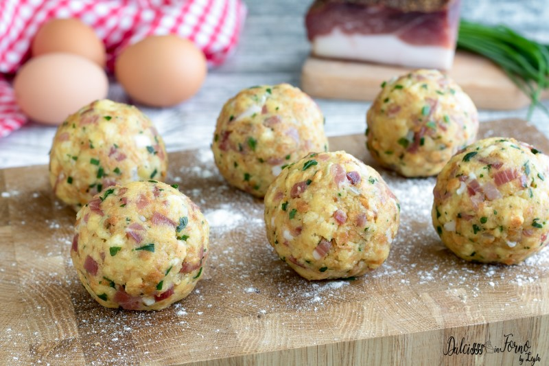

I canéderli (in tedesco Semmelknödel) sono degli Knödel (grossi gnocchi) composti di un impasto a composizione variabile a base di pane raffermo. Primo piatto tipico della cucina mitteleuropea, fa parte della cucina trentina, altoatesina e tedesca sudorientale, oltre che di quella austriaca, ceca, slovacca, ungherese e polacca.
